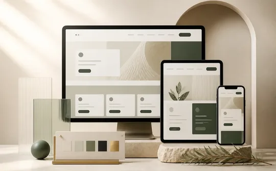
Responsive UI systemsFrontend Development
I build fast, responsive interfaces that are clear and easy to use on every screen size.
HTML5CSS3JavaScriptjQueryAngularReact.jsVue.js
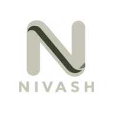
Full Stack Developer · Madurai, India
Since October 2022, I have delivered 8 production web products across manufacturing, logistics, public finance, education, and sales.
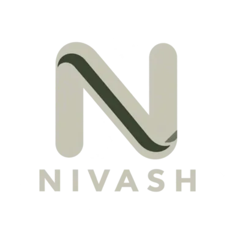
Designing the interface.
Engineering the system.
About me
I'm Nivash B, a Full Stack Developer from Madurai. I build complete web products, from the user interface to the API and database. I focus on software that is reliable, easy to use, and simple to maintain.
What I do
I build the interface, backend, and database as one reliable product.

Responsive UI systemsI build fast, responsive interfaces that are clear and easy to use on every screen size.
I build secure APIs and business logic that keep complex workflows reliable.
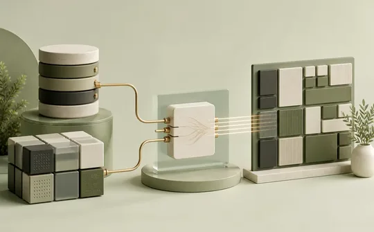
Reliable data structureI design databases that keep information accurate, organized, and easy to maintain.
Selected work
Eight web products built to solve day-to-day business problems across different industries.
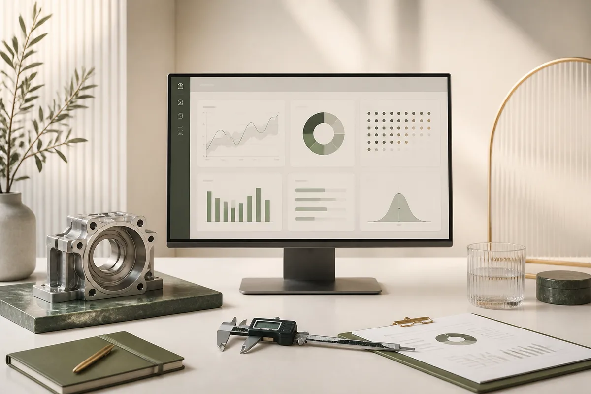
Featured projectManufacturing quality management
A factory quality management platform I built with React, Node.js, and MongoDB. It centralizes products, test values, certificates, permissions, reports, audit logs, and backups in one traceable system.
End-to-end development across the frontend, backend, database, reporting, and access control.
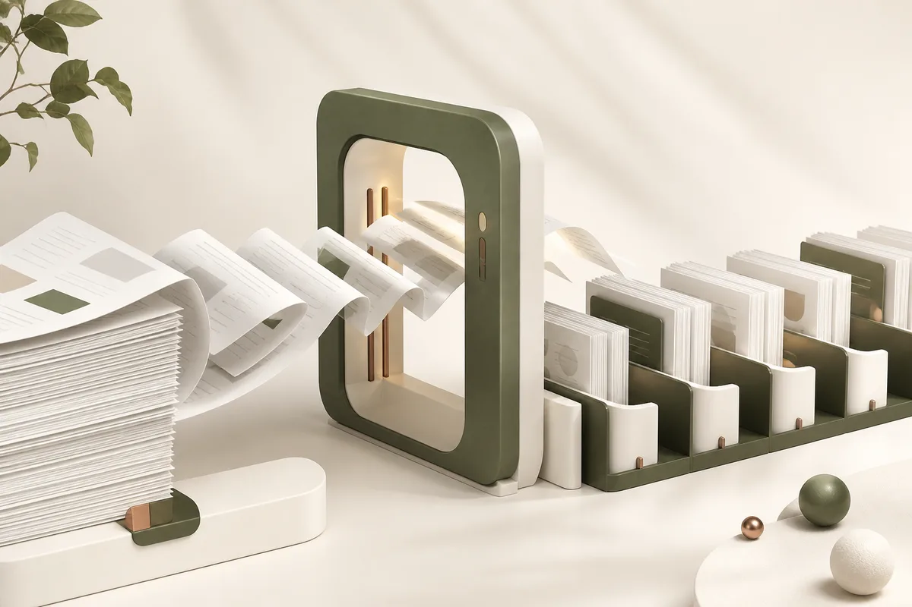
High-volume PDF automation
A document automation tool that splits large combined PDFs into correctly ordered files. Users can select pages and process 100–200 documents within 1–3 minutes.
Built the extraction workflow, batch processing, individual PDF generation, and file storage.
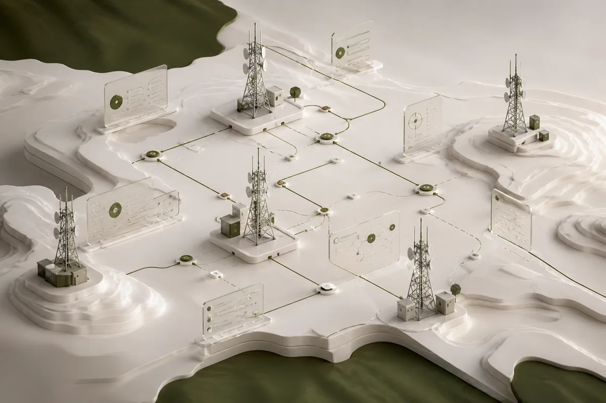
Telecom infrastructure ERP
An ERP that coordinates telecom tower installation across multiple states. It centralizes project records, location updates, and work status so teams can track every site from one system.
Developed workflows for project records, site tracking, and multi-state tower operations.
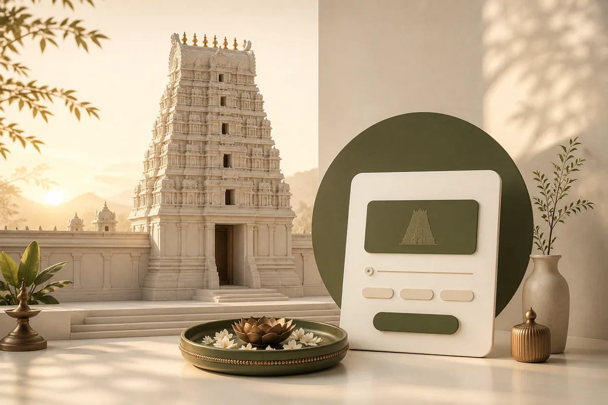
Temple trust donations
An online donation platform for a temple trust. I maintain the live application and deliver client-requested improvements to its donation flow and core features.
Maintain the live system and implement safe, focused changes requested by the client.
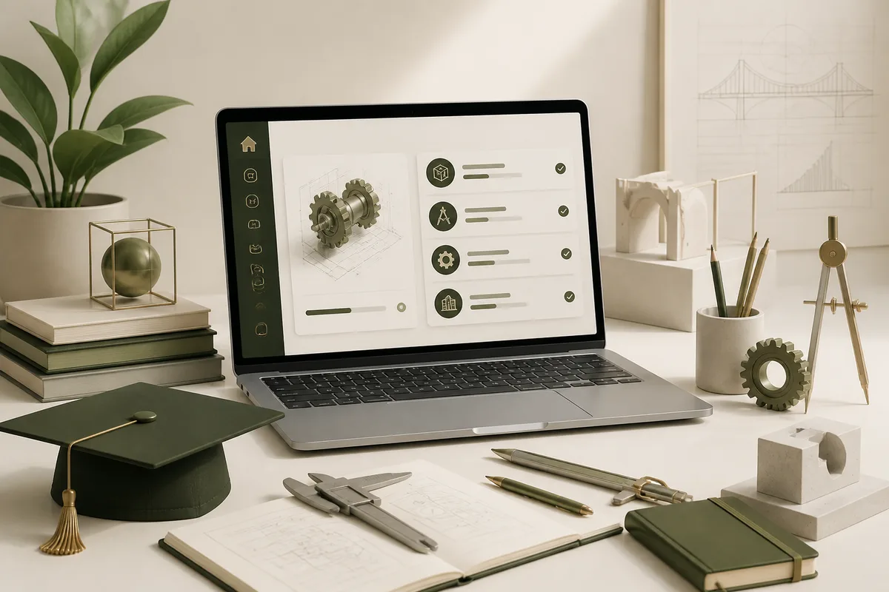
Online learning platform
An online learning platform for engineering students. Learners access courses through a simple interface, while administrators manage courses, content, users, permissions, and daily operations.
Built learner workflows and admin controls for courses, content, users, and access.
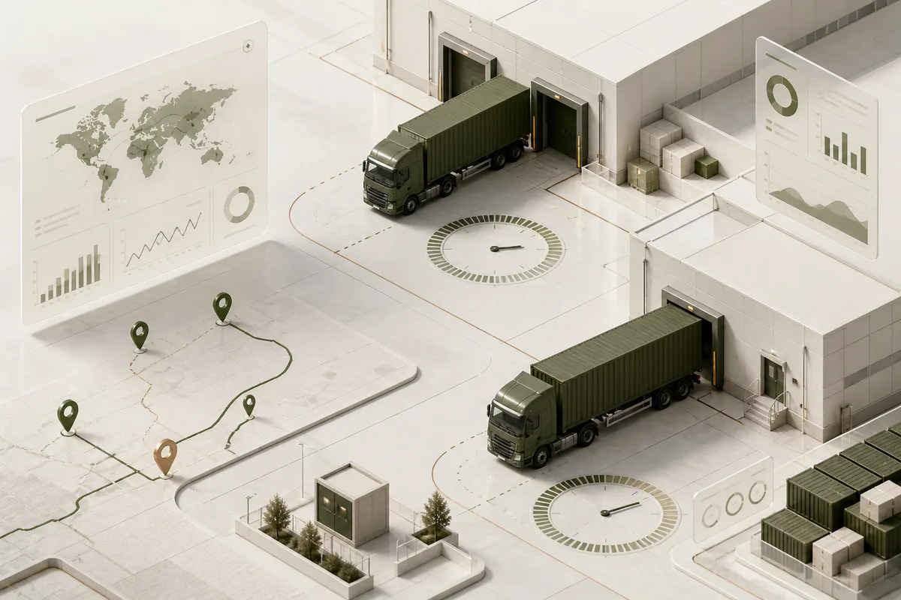
Logistics KPI tracking
A real-time KPI platform for truck loading across 3 locations. It records each load, calculates loading time, and synchronizes MySQL with SQL Server for consistent reporting.
Built the upload flow, KPI calculations, location tracking, and two-database synchronization.
Municipal tax collection
A secure multi-user platform that helps municipal offices process and track tax transactions digitally. It protects financial data, records user actions, automates reports, and displays activity in a live dashboard.
Developed secure tax workflows, audit logging, automated reports, and the analytics dashboard.
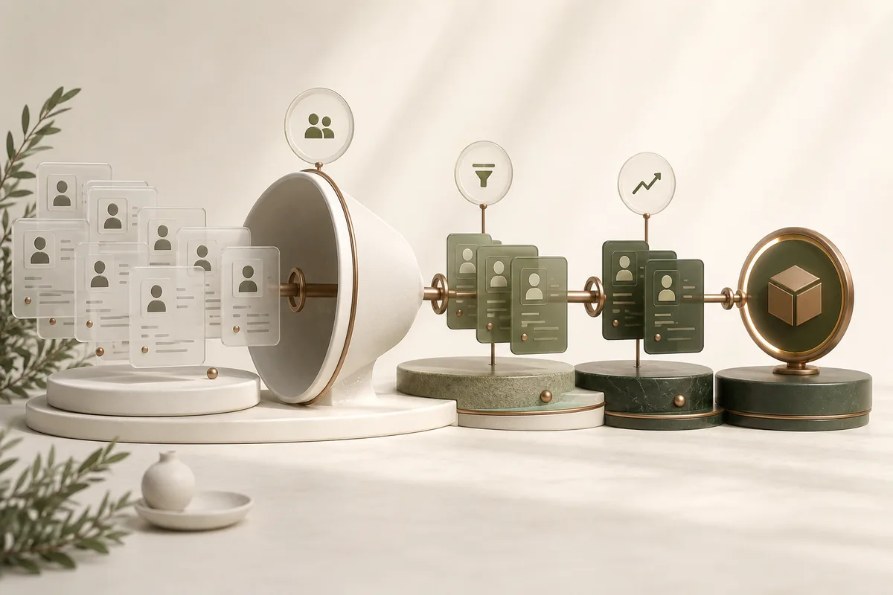
Lead-to-business CRM
A lead management platform that moves prospects from first contact to business conversion. Teams can create leads, update their stage, track progress, and keep customer details in one place.
Built lead creation, progress tracking, and conversion workflows across React and Node.js.
Career
— Present Current
Herring Infotech · Madurai
Since October 2022, I have delivered 8 production web applications across manufacturing, logistics, public finance, education, and sales. I translate client requirements into responsive interfaces, secure APIs, reliable data workflows, reports, and maintainable releases.
Education
NPR Arts and Science College · 2022 · 76%
Studied software development, databases, computer systems, and web technologies.
Have a project in mind?
I'm open to full-time roles and opportunities to build useful web products.